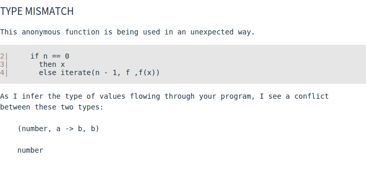

Web development is a weird thing. Out of most modern platforms, it reaches to the largest consumer base, along with the largest developer base. As a result, you have many different approaches to doing the same thing.
There is little agreement across these different developer groups on the technology stack to use
This paper is going to look at a small section of the web development world.
In particular, we are going to look at Elm and how some of the concepts in Elm aim to solve some of the issues with modern Javascript.
Nothing. This talk assumes nothing about what you already know.
Every concept that's important will be explained from the ground up, with examples of uses and explanations of why and how.
Elm appeals to three main markets:
Elm provides a framework similar to React's Flux, in a language similar to Haskell.
Functional reactive programming (FRP) is a way of modelling values that change over time.
Rather than representing changes by manually updating some variable to store the value, instead FRP works on the principle of using functional-style maps, folds and filters to express code that can be deemed reactive to some value
The current time is a perfect example of FRP. In a non-reactive language, you can model changes in time through a couple of different ways -
while True:
current_time = datetime.now()
update_view(current_time)
time.sleep(1000) setInterval(function({
currentTime = (new Date()).getHours();
updateView(currentTime);
}), 1000);whereas in an FRP based language, you would instead do -
Signal.map timeView (every second)In our Python and Javascript examples, our program relies on us updating a mutable value (currentTime) in order to be used elsewhere in the program.
The developer must be sure to write update functions that not only update the variables used, but the view too.
In our Elm example, there's no need to worry about updating our variables manually. Signal.map will send our view function the time whenever a new signal is produced with a new time (in this case, every second)
FRP provides a way of modelling programs without the need for callback hell, simplifying the code base.
Instead of worrying about how to update variables, instead the developer can write code focusing on how the variable should be used.
In a developement world where the code bases are prone to getting complex and unstructured, simiplifying things is important.
Solutions such as RxJs already exist and are used in the wild. Rx itself is based largely off of a standard which is language-agnostic, meaning that solutions exist in multiple languages.
It is the most widely used library outside of Haskell's FRP implementations.
The lack of FRP-support built-in means that code for expressing models can be complicated quickly a we'll look at in the next couple of slides.
An example with RxJS:
var source = getAsyncStockData();
var subscription = source
.filter(function (quote) {
return quote.price > 30;
})
.map(function (quote) {
return quote.price;
})
.subscribe(
function (price) {
console.log('Prices higher than $30: $' + price);
},
function (err) {
console.log('Something went wrong: ' + err.message);
});
subscription.dispose();The previous example in Elm looks like this
moreThan30 = List.filter (\quote -> quote.price > 30)
logItem v = log "Prices higher than $30: $"
Signal.map (moreThan30 >> List.map logItem) getAsyncStockDataHaving a language designed around Elm, with inspiration from Haskell, means you end up with things like this -
Signal.map : (a -> b) -> Signal a -> Signal bSignal.map applies functions to data contained within a Signal.
Elm enables the developer to write their functions ignoring how signals work internally.
This enables them to express a program at higher level of abstraction, simplifying both the writing and reading of code.
Elm therefore is very exciting to developers.
My paper aims to:
Elm has a defined architecture that all Elm apps follow:
Stores the data in your application
Generates a visualization of your data in the model
Updates your model based off the current input Signal
import Html exposing (div, button, text)
import Html.Events exposing (onClick)
type Action = Increment | Decrement | None
type alias Model = Int
model : Model
model = 0
currentClick : Signal.Mailbox Action
currentClick = Signal.mailbox None
update : Action -> Model -> Model
update action model =
case action of
Increment -> model + 1
Decrement -> model - 1
None -> model
view : Signal.Address Action -> Model -> Html.Html
view address model =
div []
[ button [ onClick address Increment ] [ text "+" ]
, div [] [ text (toString model) ]
, button [ onClick address Decrement ] [ text "-" ]
]
model' : Signal.Signal Model
model' = Signal.foldp update model currentClick.signal
main = Signal.map (view currentClick.address) model'makes:
Elm follows what we call an model-view-update (MVU) cycle.
Each change in a mapped signal makes the update cycle happen.
Each update function has a type signature along the lines of
update : Action -> Model -> ModelActions are a way of representing the things that happen in your application at a high level.
For example, in our previous example we only had three Actions
type Action = Increment | Decrement | NoneBy looking at the definition of an Action, we can tell what our application can do
Let's look at someone else's source code.
type Command =
Nop |
MoveBy Grid.Position |
MoveTo Leaf |
Continue |
RestartLevel |
Start (Maybe Game)Command here is our Action type. It has seven possible interactions. Just seven, abstract forms of interaction.
Everything we can do which will change the model of the application falls into one of these types.
taken from Froggy example
Compare this is a render function taken from one component in React -
render: function() {
return (
<div>
<h1>Top ten companies with Attendees</h1>
<TopTen ten={this.state.top}></TopTen>
<div className="Chart" ></div>
<h1>Proportion of Attendees grouped by number of events</h1>
<RadioButtons init_value={this.state.value} onChange={this.onValueChanged}/>
<h2>Select Time Range</h2>
<Demo orientation='horizontal' defaultValue= {[0,1747]} max = {1747} changeHandler={this.onSliderChanged} />
<p>Start Date:{this.state.dates[0]}</p>
<p>End Date:{this.state.dates[1]}</p>
<p>N of {this.state.value=='company' ? 'Companies' : 'Individuals' } attending in this timeframe:</p>
</div>
);Can you tell how many types of interaction there are? Can you tell what they do?
Signals are the implementation of FRP that Elm uses.
Signals have 3 important methods:
map :: (a -> b) -> Signal a -> Signal b
foldp :: (a -> b -> b) -> b -> Signal a -> Signal b
filter :: (a -> Bool) -> a -> Signal a -> Signal amap applies a function to a value within a signal, producing a new signalfoldp applies a fold function to a value, given a start value, and produces new signals based on the old onefilter filter applies a function that converts a value into True/False, keeping the signals that pass and discarding the restScared? Don't worry, it's not as confusing as it seems. For most uses, you'll only need to worry about using Signal.map.
In layman's terms, Signal.map allows us to apply a function to a value contained within a Signal and create a different resulting Signal.
name : Signal String
name = <incoming name>
uppercaseName : Signal String
uppercaseName = Signal.map (toUpper) nameElm uses the concept of mailboxes to capture event listeners.
Mailboxes:
Action)This is a slightly different way of implementing our previous example. It does the exact same thing, and functions in the exact same way.
import Html exposing (div, button, text)
import Html.Events exposing (onClick)
type Action = Increment | Decrement | Noop
model = 0
model' = Signal.foldp update model actions.signal
main = Signal.map (view actions.address) model'
view : Signal.Address Action -> Int -> Html.Html
view address model =
div []
[ button [ onClick address Decrement ] [ text "-" ]
, div [] [ text (toString model) ]
, button [ onClick address Increment ] [ text "+" ]
]
actions: Signal.Mailbox Action
actions = Signal.mailbox Noop
update action model =
case action of
Increment -> model + 1
Decrement -> model - 1
Noop -> modelLet's explicitly look at mailboxes from our previous example.
We create a mailbox with a default message to start with
actions : Signal.Mailbox Action
actions = Signal.mailbox NoopOnce we have a mailbox, we can grab the two important fields in the Mailbox record
type alias Mailbox a =
{ address : Address a
, signal : Signal a
}model' = Signal.foldp update model actions.signalactions.signal will give us access to the signal produced by the mailbox. This signal is updated any time something is sent to the associated mailbox
main = Signal.map (view actions.address) model'actions.address will give us the address for the mailbox, which we can use to send items to the mailbox as below
view : Signal.Address Action -> Int -> Html.Html
view address model =
div []
[ button [ onClick address Decrement ] [ text "-" ]
, div [] [ text (toString model) ]
, button [ onClick address Increment ] [ text "+" ]
]There are no x.addEventListeners in Elm. not actually true If you want to know what happens, look at the Action and update function. The developer no longer needs to look everywhere in case some other developer decided to introduce mutations in a different place to everyone else.
This is one of the biggest strengths of Elm. The use of immutability, along with a foldp-structure, makes expressing applications simple.
Elm is a static, strongly typed language, very similar to Haskell. If types don't match at compile-time, the developer will get an error.
The right argument of (+) is causing a type mismatch.
3| f = d + "hello"
As I infer the type of values flowing through your program, I see a conflict
between these two types:
number
StringAbstract data types are the thing that makes the type Action = Something | Nothing possible.
Being able to define your own ADTs has been something Haskell developers have enjoyed for a while - managing flow through an abstract representation of the data is preferable to using primative values.
The following example is from Stalk, a language with a built-in IDE written in Elm
update : Action -> Program -> Program
update action program =
case action of
UpdateText x -> { program | enteredText <- x, steps <- 0 }
Enter -> { program | model <- programRunner program.enteredText program.model }
Reset -> { program | model <- runCommand 0 (Clear, 0) program.model, steps <- 0 }
Step ->
case String.split "\n" program.enteredText of
[] -> program
x::xs ->
let
program' = { program | model <- programRunner x program.model }
in
{ program' | enteredText <- String.join "\n" xs, steps <- program'.steps + 1 }
Noop -> programThe use of case..of here is called pattern matching. Pattern matching in languages with ADTs means control flow by doing different things depending on the constructor used for a particular type.
ADTs used in this manner control the features of your application.
If someone wants to make a new feature, then they must add a new constructor for your Action type
Picking alternatives in the web development community is never an easy thing.
There is a common joke of "x days since a new Javascript framework has been released".
There's even a website dedicated to it.

There are many Javascript frameworks out there. For this project, we will look at Angular.js and React.js
Redux takes the Elm architecture and attempts to apply it to Javascript.
The structure of a Redux app is far more fragmented than an Elm application, and is more difficult to get into.
There's also many "compile to Javascript" languages out there. We'll be looking at Haskell-based alternatives such as Fay and GHC.js.
A brief look at the problems Elm faces
We've spoken enough about how great Elm is, and how it works. Now it's time to start looking at where it falls down.
Whenever I get a student or a coworker to install Elm, the first question they ask me is how? and my insides always curl up a little, preparing myself for the next 4 hours of debugging their machine.
The biggest problem seems to be when somebody installs on a platform using cabal instead of npm, then cabal is out of date and it fails to install, so they use npm only to see npm error out too!
No other mainstream language I know of has this problem.
If I want to use Python, I can download a binary that'll run just fine. The same for nodejs, Haskell, Java, Go, etc.
For Elm, the relience on 3rd party means of distrubuting the platform is a massive hurdle, enough to stop anyone from trying it out in their tracks.
There's an effort being taken to try and link and document all related installation issues on Github.
This issue has reached the attention of Evan and has been acknowledged as a point of frustration.
Elm 0.16 aims to fix this with a new installer.
Ever seen a message like this?

In Elm, error messages can be seen as vague and confusing, especially for those not from Haskell backgrounds.
What the error says is perfectly true, it was given a tuple of (number, a-> b, b) when it was expecting to recieve a number, but if you aren't aware of the way that Elm/Haskell function calls work then you won't know that f x y z is actually ((f x) y) z
The error-message-catalog repo run by the elm-lang organization aims to catalog error messages, giving examples of programs that generate error messages.
The aim of the project is to document and provide more useful error messages, if you see a stupid error, then add it to the repo!
There's also a blog on the recent modifications to Elm 0.15.1 to try and make more readable errors.
Any language which is under heavy development is likely to be unstable. Unlike many 0.x releases for other libraries and frameworks, the features and implement of Elm changes rapidly over a short period of time.
Signals used to be called Varying. Streams used to represent what foldp does now. Changes in the core library are slow to be released as bug fixes.
While this is of course needed until Elm finds a good place to become stable, it does mean that it is very hard to recommend Elm for production usage. If a new version of Elm comes out, the development team will need an Elm guru to upgrade the version of libraries they're using.
TODO